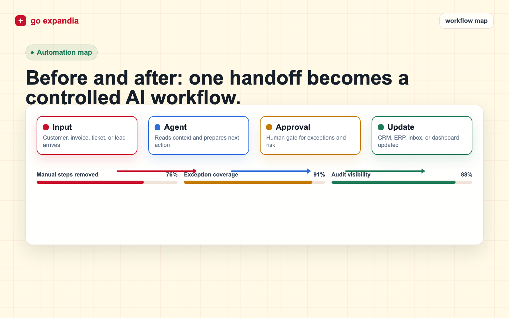
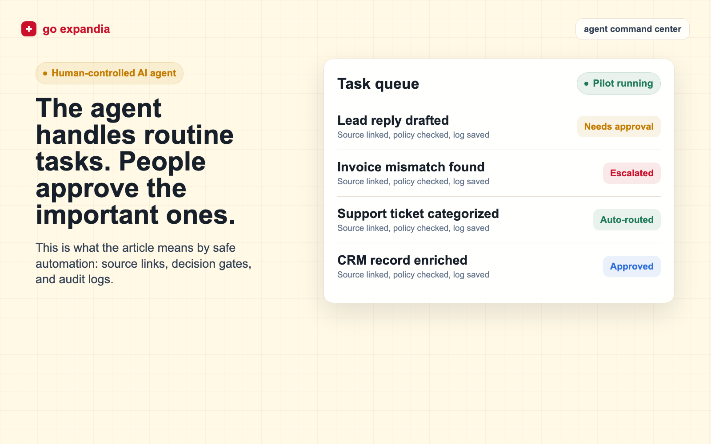

AI Workflow Automation: 15 Business Processes to Automate First
AI workflow automation works best when you start with repeatable business processes, clear inputs, visible handoffs, and measurable outcomes. This guide shows which workflows to automate first and how to choose a pilot that your team can trust.

Best first projects
Lead routing, support triage, invoice checks, CRM updates, reporting, document processing, approvals, and follow-up workflows.
Primary keyword
AI workflow automation
Best first target
High-volume repeat work
Pilot timeline
2 to 6 weeks
Main success metric
Time saved per workflow
TL;DR
The best first AI workflow automation project is not the flashiest one. Start with a process that is repeated often, has clear rules, uses accessible data, creates visible delay, and can keep humans in control when judgment is needed. Lead routing, support triage, invoice review, reporting, CRM cleanup, document processing, and approval workflows are usually stronger starting points than broad "AI transformation" projects.
AI workflow automation is the use of AI, integration logic, rules, and sometimes AI agents to move work through a business process with less manual effort. A workflow might start when a lead fills out a form, a support ticket arrives, a supplier sends an invoice, a document needs review, or a manager requests a report. The automation reads the input, checks context, routes the task, drafts or completes the next step, and alerts the right person when human review is needed.
The common mistake is trying to automate everything at once. That creates risk, confusion, and weak adoption. The better path is to pick one workflow where the business case is obvious. You want a process that happens every week, creates repeatable manual work, has enough structure to define the right output, and has a clear owner who can approve the first pilot.
This guide covers 15 business processes to automate first. It is written for founders, operators, sales leaders, support managers, finance teams, and operations teams that want AI automation but need a practical way to start. Use it as a checklist before you buy workflow automation tools, hire an AI automation agency, or ask your team to build an internal AI agent.
A good AI workflow automation project should have a clear before and after. Before automation, people are copying information between tools, waiting for someone to review a request, writing the same answer again, cleaning the same fields, or chasing the same approval. After automation, the work is captured, checked, enriched, routed, drafted, summarized, or escalated with less manual handling. The team should still know who owns the process and where the system stops.
That last point matters. AI workflow automation is not the same as giving a model permission to run the company. The strongest systems combine automation with boundaries. They define what AI can do, what it can suggest, what it must never do, and when a person needs to review the output. This keeps the project practical. It also makes adoption easier because employees can see how the system supports their work instead of replacing judgment blindly.
When evaluating workflow automation tools, AI automation software, or an agency partner, look for operational discipline. The right partner should ask for sample inputs, edge cases, system access, data rules, and success metrics. If the conversation stays at the level of "we can automate anything," slow down. Serious AI automation work starts with the process, not the demo.
How to Choose the First AI Workflow Automation Project
Before choosing a tool or model, score the workflow. The strongest first projects usually share five traits: repeatable volume, clear inputs, defined outputs, measurable time cost, and manageable risk. If a process is rare, political, poorly documented, or dependent on deep human judgment, it may still be worth improving, but it is probably not the right first pilot.
| Signal | Good first pilot | Risky first pilot | What to ask |
|---|---|---|---|
| Volume | Happens daily or weekly. | Happens rarely or unpredictably. | How many times per month does this workflow run? |
| Input quality | Uses forms, tickets, emails, documents, or records with patterns. | Depends on scattered context nobody can find. | Where does the input arrive, and what examples can we review? |
| Output | Has a clear next action, draft, route, answer, report, or approval. | Has no agreed definition of done. | What should a good output look like? |
| Risk | Can keep human review on exceptions or final approval. | Could make irreversible decisions without review. | Which steps must stay under human control? |
The scorecard should be used before the sales call and again before the build starts. Many workflows look attractive in a meeting but fail when the team tries to find clean examples, define the output, or agree on the exception path. If the process cannot be described in plain language, it is not ready for automation. If the process is clear but the data is scattered, the first project may need to include cleanup before AI is added.
The safest first pilot usually has a narrow boundary. It might automate one inbox, one form, one report, one approval queue, or one CRM cleanup workflow. Once that pilot works, the same pattern can expand to adjacent processes. This staged approach is slower than a big promise, but it is much faster than repairing a rushed automation that nobody trusts.
Start with one workflow
Want help choosing the first automation pilot?
Go Expandia can map your workflow, score automation fit, and define a practical AI pilot before you invest in a larger rollout.
1. Lead Qualification and Routing
Lead routing is one of the best first AI workflow automation projects because the input is usually structured enough to evaluate. A lead arrives from a form, ad, email, chat, marketplace, or referral. The automation can enrich the company, classify the request, score fit, assign the right owner, and create a follow-up task in the CRM.
Keep the first version simple. Define the fields that matter: company size, location, budget signal, urgency, service interest, and fit with your offer. Let the automation draft the first response or route the lead, but keep humans involved for high-value opportunities. The result should be faster response time and fewer leads sitting untouched.
A practical pilot can start with one lead source and one CRM. The automation should tag the lead, assign it, write a short internal summary, and create a response draft. Measure speed to first touch, number of leads assigned correctly, number of manual CRM updates avoided, and the percentage of leads that still need human correction. Those metrics show whether the workflow is helping sales move faster without damaging qualification quality.
2. Customer Support Triage
Support triage is a strong use case because tickets often follow patterns. AI can classify the issue, identify urgency, detect sentiment, suggest a response, route the ticket, and attach relevant knowledge base articles. This reduces the time agents spend reading and sorting tickets before they can actually solve the problem.
Do not start by letting AI answer every customer automatically. Start with triage, suggested replies, internal notes, and escalation logic. Human review should stay in place for refunds, legal complaints, account changes, security issues, and angry customers. A controlled support workflow creates value without risking customer trust.
For the first version, use a small set of ticket categories and a clear escalation map. The system can label the ticket, identify likely intent, suggest the next action, and show the agent which policy or article supports the suggestion. Track time to first classification, routing accuracy, avoided reassignments, and the share of replies accepted by the support team. If agents keep rewriting everything, the workflow needs better examples or tighter knowledge sources.
3. Invoice Review and Finance Checks
Invoice review is a practical AI automation target because the work is repetitive and rule-heavy. The system can extract supplier details, invoice numbers, amounts, due dates, tax fields, purchase order references, and payment terms. It can then compare the invoice against expected records and flag mismatches for human review.
The first pilot should focus on reducing manual checking, not replacing finance accountability. Let AI prepare the review, highlight exceptions, and route approvals. Keep final payment approval with the finance owner. This gives the team speed while maintaining control over money movement.
The automation should produce a review note that finance can scan quickly. That note should list extracted fields, matched purchase order or vendor record, detected mismatches, confidence level, and recommended next step. The success metric is not just how many invoices the system reads. It is how much review time it saves while catching the exceptions that matter. If the system cannot explain why it flagged an invoice, it will be hard for finance to trust.

4. Weekly Reporting and Dashboard Summaries
Many teams lose hours preparing the same reports every week. AI workflow automation can collect metrics, summarize changes, explain unusual movement, draft commentary, and send the report to the right stakeholders. This is useful for sales pipelines, customer support, operations, project delivery, finance, and marketing performance.
The key is to define the report owner and the source of truth. AI should not guess numbers from random exports. Connect the right systems, define the metrics, and ask AI to summarize what changed. The team should still review the final report, especially when the numbers affect budget, staffing, or customer commitments.
A strong reporting pilot has a fixed cadence and a fixed format. For example, the automation might collect pipeline movement every Friday, compare it with the previous week, summarize stuck deals, list next actions, and send the draft to the sales lead for review. The human owner can edit the commentary before it goes to the wider team. This keeps the report useful and prevents AI from becoming an unreviewed narrator of business performance.
5. CRM Updates and Data Cleanup
CRM hygiene is a common pain point because sales teams rarely want to spend time cleaning records. AI can update missing fields, normalize company names, suggest industries, flag duplicates, extract next steps from emails or calls, and remind owners when opportunities have gone stale.
Start with cleanup suggestions and review queues. Do not let a new automation overwrite important records without safeguards. A good CRM automation should reduce admin work while making the data more trustworthy for pipeline reviews, forecasting, account planning, and customer follow-up.
The best starting point is often a queue of suggested changes. AI can identify missing industries, stale stages, duplicate accounts, blank next steps, and opportunities with no recent activity. A sales operations owner can approve batches or reject weak suggestions. Over time, accepted changes become training examples for better rules. The goal is not perfect data overnight. The goal is a repeatable cleanup rhythm that keeps the CRM from decaying again.
6. Document Intake and Processing
Document workflows are ideal for AI because teams often need to read, extract, classify, and route information from files. Examples include applications, contracts, onboarding forms, order documents, supplier forms, insurance documents, HR paperwork, and compliance records.
The first workflow should focus on extraction and routing. Define the fields to extract, the confidence threshold, and the exception path. When the document is unclear or sensitive, route it to a person. The automation should make review faster, not pretend that every document can be understood perfectly.
A useful document automation should show the source behind each extracted field. If the system pulls a date, amount, name, or contract clause, the reviewer should be able to see where it came from. This makes review faster and reduces blind trust. Measure extraction accuracy, review time, exception rate, and the number of documents that can move to the next step without manual retyping. Keep a sample set of difficult documents for regression testing after every change.
7. Proposal and Quote Drafting
Proposal drafting is a good AI workflow automation candidate when your team already has a repeatable offer structure. AI can pull notes from discovery calls, match the request to service modules, draft scope language, assemble relevant sections, and flag missing information before the proposal goes out.
Keep pricing, commitments, legal terms, and custom promises under human approval. The automation should create a stronger first draft and make the sales team faster. It should not create a contract your team has not reviewed.
Start by giving AI approved building blocks: service descriptions, scope options, discovery questions, timeline ranges, exclusions, and examples of strong proposals. The workflow can then assemble a draft based on the opportunity notes and flag missing information. This avoids a blank-page problem while keeping the salesperson responsible for accuracy. Measure draft time saved, revision volume, proposal consistency, and whether fewer proposals go out with missing details.
8. Meeting Notes and Follow-Up Tasks
Meeting follow-up is simple but valuable. AI can summarize a call, identify decisions, extract tasks, assign owners, draft follow-up emails, update the CRM, and create project notes. This helps teams avoid the common gap between a good meeting and poor execution afterward.
The first pilot should define where notes go and which actions matter. If every meeting summary creates ten low-quality tasks, users will ignore it. Focus on clear next steps, owner, due date, and context. A useful meeting automation makes work more accountable, not noisier.
The workflow should distinguish between a note, a decision, a risk, and an action item. A decision might update a project record. A risk might alert a manager. An action item might create a task with owner and due date. A note might simply remain in the meeting summary. This distinction prevents the automation from flooding task systems. Measure whether follow-up emails are sent faster, tasks are clearer, and fewer commitments are lost after calls.
9. Internal Approval Workflows
Approvals are often slow because requests arrive with missing context. AI workflow automation can check whether a request includes the right fields, summarize the decision needed, identify policy issues, route the request to the correct approver, and remind people when the approval is stuck.
This is useful for purchasing, discount approvals, hiring requests, content approvals, access requests, and project changes. Keep the decision authority with the approver. The automation should prepare the decision and reduce back-and-forth, not approve sensitive changes on its own.
An approval automation should make the request complete before it reaches the approver. It can check required fields, attach supporting documents, summarize the reason, list policy limits, and ask the requester for missing context. The approver then sees a clean decision packet instead of a vague message. Track time waiting for missing information, approval cycle time, number of reminders sent, and how often requests need to be returned for correction.
10. Employee or Client Onboarding
Onboarding includes many repeatable steps: collecting information, creating accounts, sending instructions, scheduling sessions, assigning tasks, checking completion, and answering common questions. AI can coordinate these steps and make the experience more consistent.
Start with reminders, checklists, information collection, and routing. Be careful with access permissions and personal data. A good onboarding automation should reduce missed steps and make the new employee or client feel guided, not handled by a faceless system.
The strongest onboarding workflows are event-driven. A signed contract, accepted offer, paid invoice, or completed intake form can trigger the next steps. The system can send the right welcome message, create tasks, collect missing information, schedule sessions, and alert the owner when something is overdue. Measure missed steps, time to complete onboarding, support questions during onboarding, and satisfaction from the people going through the process.
11. Knowledge Base Answers for Internal Teams
Internal teams waste time asking the same operational questions: where a policy lives, how to handle a support case, which sales deck to use, how to update a process, or what a system field means. An AI assistant connected to approved knowledge can answer these questions and point people to the source.
The quality depends on the knowledge base. If the documents are outdated, the automation will repeat outdated guidance. Start by choosing a controlled source set, requiring citations or source links, and creating a feedback loop for missing or incorrect answers.
This workflow should be treated as a knowledge operations project, not only a chatbot project. Define which sources are approved, who owns updates, how outdated answers are corrected, and how employees report gaps. AI should show citations or links so the user can verify the answer. Measure repeated questions reduced, time to find policy information, answer acceptance, and the number of knowledge base improvements discovered through user feedback.
12. Research and Market Monitoring
Research workflows are useful when teams need to monitor competitors, prospects, regulations, suppliers, products, job postings, reviews, or market signals. AI can gather updates, summarize changes, tag relevance, and route important findings to the right person.
Set boundaries carefully. Define trusted sources, update frequency, summary format, and escalation rules. The output should not be a pile of links. It should tell the team what changed, why it matters, and what action might be needed.
A good monitoring workflow starts with a narrow brief. Instead of asking AI to watch the whole market, ask it to watch defined sources for defined signals. That might be competitor pricing changes, new job postings from target accounts, regulation updates in one category, or supplier risk signals. The system should separate routine changes from urgent items. Measure signal quality, time saved in research, and whether the alerts lead to useful action.
13. Content Operations and Review
Content teams can use AI workflow automation for briefs, first drafts, metadata, internal linking suggestions, repurposing, proofreading, and review routing. The best use is operational support, not uncontrolled publishing. AI can help a team move faster while editors keep quality and brand voice intact.
Define the workflow stages: brief, draft, review, compliance, approval, publish, refresh. Then automate the handoffs and repetitive checks. Keep final publication under human control, especially for claims, pricing, legal language, medical topics, financial topics, and brand-sensitive statements.
The first automation can be a content checklist rather than a writing engine. It can check whether the brief includes audience, keyword, search intent, internal links, CTA, claims to verify, image requirements, and schema needs. It can then route the draft to the right reviewer. This keeps quality high and reduces operational misses. Measure review cycle time, missing metadata, internal link coverage, and how often published pieces need preventable fixes.
14. Renewals and Customer Health Checks
Customer success teams can use AI to monitor usage signals, ticket volume, sentiment, contract dates, payment status, and account notes. The automation can flag accounts that need attention, draft renewal preparation notes, and suggest the next outreach.
This workflow works best when account data is already reasonably organized. Start with health summaries and renewal reminders. Keep sensitive customer decisions with the account owner. The goal is to help people notice risk earlier and prepare better conversations.
The automation should create a short account brief before the renewal conversation. That brief might include recent usage, open issues, unresolved invoices, support sentiment, contract dates, stakeholder changes, and suggested next steps. It should also flag missing data so the account owner knows what to check. Measure earlier renewal preparation, fewer missed dates, improved follow-up consistency, and reduced time spent gathering account context.
15. Recruiting Intake and Candidate Screening Support
Recruiting workflows include intake forms, job descriptions, candidate summaries, interview notes, scheduling, and status updates. AI can help organize this work, summarize candidate materials, match basic requirements, and keep hiring managers informed.
Be careful with fairness, privacy, and employment law. AI should support recruiters, not make final hiring decisions. Use it to reduce admin work, summarize information consistently, and highlight missing data. Human judgment should remain central.
A safe pilot can focus on intake and coordination. The workflow can collect role requirements, draft a job post from approved language, summarize candidate materials for recruiter review, schedule interview steps, and keep hiring managers updated. Avoid automated rejection decisions unless legal and HR controls are mature. Measure time spent preparing candidate summaries, scheduling delays, hiring manager response time, and consistency of interview packets.
How to Start an AI Workflow Automation Pilot
Once you choose a process, map it end to end. Document what triggers the workflow, what information is needed, which systems are involved, who owns each step, where delays happen, and what a successful output looks like. This map becomes the foundation for automation logic, AI prompts, integration requirements, testing, and support.
Then define the smallest useful pilot. A good first pilot does not need to automate the entire department. It might classify support tickets, draft weekly pipeline summaries, check invoice fields, or prepare CRM cleanup suggestions. The scope should be small enough to launch quickly and meaningful enough to prove value.
Finally, test with real examples. Use successful cases, messy cases, edge cases, and cases where automation should stop and ask for human review. Measure time saved, error reduction, user adoption, and the number of exceptions. The best pilots create a repeatable operating model for the next workflow.
A pilot should also have a named business owner and a named technical owner. The business owner defines what good work looks like and approves the rollout. The technical owner handles integrations, access, prompts, rules, logging, and fixes. Without both roles, the project can drift. The tool may work, but nobody owns the operating result. Clear ownership is one of the biggest differences between an AI demo and real workflow automation.
Document the rules before launch. Write down what the automation does automatically, what it only suggests, what it never does, and what triggers escalation. Include examples of acceptable outputs and unacceptable outputs. This documentation is useful for training users, debugging problems, and deciding whether the pilot is ready to expand.
After launch, review the workflow weekly during the first month. Look at errors, exceptions, ignored suggestions, user complaints, and unexpected edge cases. Improve the system based on real usage. AI workflow automation is rarely perfect on day one. The goal is to build a feedback loop that makes the system more useful without losing control.
What Not to Automate First
Not every workflow should be automated early. Avoid starting with decisions that are legally sensitive, emotionally sensitive, irreversible, or poorly understood. Examples include final hiring decisions, final payment approval, disciplinary actions, legal advice, medical decisions, major pricing exceptions, and customer terminations. AI may help prepare information for those workflows, but the final decision should remain with accountable people.
Also avoid workflows where the current process is broken in a non-technical way. If nobody agrees who owns the work, if the approval rule changes every week, or if the team has no shared definition of a good output, automation will expose the confusion rather than solve it. In those cases, the first step is process design. Map the workflow, decide ownership, simplify the handoffs, and only then add AI.
Measure ROI in practical terms. Count how many times the workflow runs, how long each run takes, how much rework happens, and what delay costs the business. Then compare that baseline with the pilot. Strong metrics include time saved, faster response, fewer handoffs, fewer missed steps, lower rework, better data completeness, and higher adoption. Do not measure success only by whether the automation is technically impressive.
The best first project should make people say, "This removes work I did not need to do manually." If the team instead says, "This creates more checking for me," the workflow needs redesign. Good AI workflow automation reduces cognitive load. It gives people better information at the right moment and makes the next action clearer.
One useful rule is to automate preparation before automation of judgment. Let the system collect context, check fields, draft summaries, suggest routes, and show the evidence behind its recommendation. Then let the responsible person approve, edit, or reject the next step. This pattern gives the business immediate time savings while keeping accountability clear. It also creates safer training data, because every approval and correction shows what the workflow should do next time. When that loop is visible, leaders can expand automation with confidence instead of arguing about whether the model is trustworthy. The process becomes measurable, teachable, and easier to support after launch without forcing the team to trust a black-box decision system too early internally.
Free workflow checkup
Find the first process worth automating.
Put your work email below and we will send a quick first-pass review path for choosing your first AI workflow automation pilot.
Final Checklist: What to Automate First
Start with a workflow that is frequent, expensive, slow, and structured enough to define. The best candidates usually involve repetitive review, routing, summarizing, drafting, data entry, status updates, or exception handling. The weakest first candidates are vague, rare, political, risky, or dependent on hidden context.
If several workflows look promising, choose the one with the clearest owner and easiest measurement. A process with moderate savings and a committed owner is often better than a larger process nobody wants to maintain. Adoption matters as much as technical possibility.
AI workflow automation should make the business calmer and faster. It should reduce manual handling, make work visible, keep people informed, and preserve human review where judgment matters. That is how a first pilot becomes a foundation for broader AI automation rather than another unused experiment.
The final test is simple: can your team explain the workflow in one paragraph? The paragraph should include the trigger, input, system touched, AI action, human review point, output, metric, and owner. If that paragraph is clear, the pilot is probably ready to scope. If it is vague, keep mapping. Clear workflow thinking is what turns AI automation from a technology experiment into an operating improvement.
Go Expandia approaches AI workflow automation this way because it reduces risk and creates momentum. Start with one useful process, prove that the workflow saves time or improves consistency, then expand to the next process with the same operating model. That is how businesses move from interest in AI automation tools to a real automation capability.
Author
About Bailey Roque
Bailey Roque writes for Go Expandia on AI automation, workflow design, AI agents, and practical AI adoption for business teams.
The focus is on use-case selection, human review paths, data boundaries, rollout planning, and turning AI pilots into supported operating workflows.
About Go ExpandiaFAQ: AI Workflow Automation
What is AI workflow automation?
AI workflow automation uses AI, integrations, rules, and sometimes AI agents to move a business process from input to output with less manual work. It can classify, route, draft, summarize, check, and escalate work while keeping humans involved where judgment is needed.
What should a business automate first with AI?
Start with a repeatable process that has clear inputs, visible manual effort, defined outputs, and measurable value. Good first choices include lead routing, support triage, invoice review, CRM cleanup, reporting, document processing, and approval workflows.
How long does an AI workflow automation pilot take?
A focused pilot often takes 2 to 6 weeks, depending on workflow complexity, data access, integration requirements, review rules, and testing. Discovery can usually start within days.
Do I need AI agents for workflow automation?
Not always. Some workflows only need rules and integrations. AI agents are useful when the process requires reasoning, research, drafting, multi-step task handling, or context-aware decisions under human guardrails.
Can Go Expandia build AI workflow automations?
Yes. Go Expandia helps businesses map workflows, choose the right first use case, build AI automations and agents, connect systems, train users, and support rollout after launch.
Ready to Automate the First Workflow?
Go Expandia helps companies choose the right first workflow, build AI automation safely, and expand from pilot to repeatable operating model.